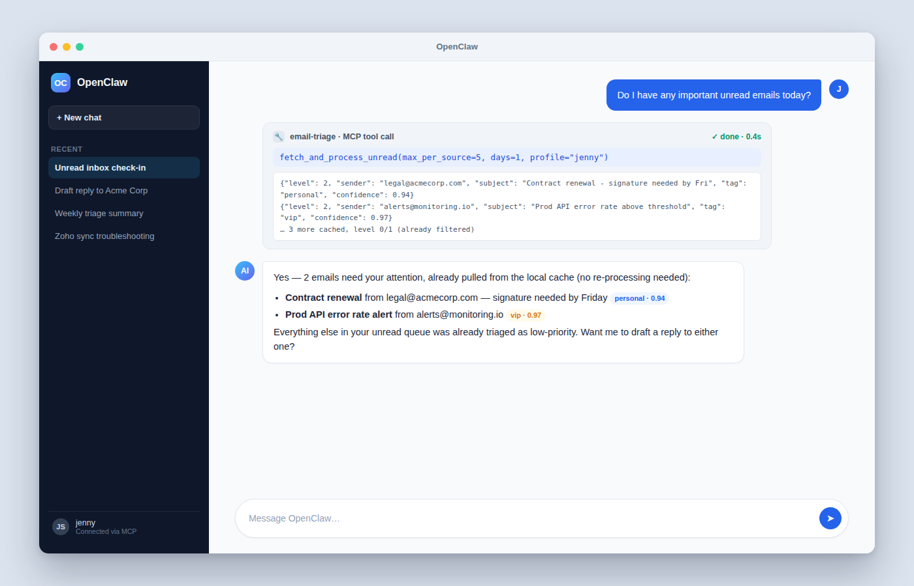

A token-efficient, multi-stage pipeline that filters noise for free, classifies the rest with a cheap model, and reserves premium LLM calls for the handful of emails that actually matter.
A naive pipeline sends every unread message's full body to a summarization model. Most inbox volume is noise — but the cost and latency scale with total volume, not with what's actually important.
1,000 unread emails → 1,000 full-body fetches → 1,000 premium LLM calls, every single sync.
1,000 unread emails → most resolved for free or by a cheap model → only the truly important ones ever reach the premium summarizer.
Every processed message is cached by Message-ID — so re-running the pipeline on mail it's already seen costs zero additional tokens.
Every unread email is evaluated in order until a level is decided. Each later stage costs more tokens and latency, so it only ever runs on whatever the cheaper stages couldn't confidently resolve.
A VIP-sender bypass and a low-confidence escalation safety net sit alongside this main line — covered next.
If the sender matches whitelist_vip_senders, skip straight to Stage 2 — full body fetch and a premium summary. No triage decision needed for people who always matter.
Regex/substring match against blacklist_keywords / blacklist_senders, unless the sender's domain is explicitly whitelisted. A hit tags the message low / level 0 — no network call, no LLM call.
unsubscribe · newsletter · promotions · marketing · no-reply · noreply · digest · advertisement
Not an LLM call — a semantic reranker (a Cohere/Jina-style /rerank endpoint) scores each email's relevance against two fixed "anchor" documents representing the concepts of importance and noise.
From: {sender} | Subject: {subject} | Snippet: {snippet}POST /rerank {"model", "query", "documents": [important, noise]} → {"results": [{"index", "relevance_score"}]}0.95 and ≥ noise → Level 2 · noise ≥ 0.999 and > importance → Level 0 · otherwise → fall through to Level 1Sends only From / Subject / Snippet — never the full body — to a cheap model (e.g. a flash-tier DeepSeek model) via an OpenAI-compatible /chat/completions proxy, expecting a strict JSON decision.
| Field | Meaning |
|---|---|
suggested_level | 0 (noise) · 1 (notification) · 2 (important) |
reason | short natural-language justification |
confidence_score | 0.0 – 1.0 |
tag | one-word classification, e.g. promotion, personal, vip |
The same rerank-based classifier from Stage 0.5 can also stand in here (triage_type: "tei") instead of an LLM call, for accounts that don't need Stage 1's nuance.
If Stage 1's confidence_score falls below confidence_threshold (default 0.8), the full body is fetched and re-evaluated by the premium model — a rare safety net, not the normal path.
Only for messages that land here: full body → premium model → a bulleted executive summary, plus its own confidence score and tag.
summary (string) · confidence_score (0.0–1.0) · tag (e.g. vip)
Every processed message is keyed by its RFC Message-ID in a SQLite email_cache table: triage level, tag, reason, score, summary, and per-stage token/duration metrics.
A row can exist before triage runs (metadata downloaded, not yet classified) — "processed" specifically means triage_level IS NOT NULL, not just "row exists".
Cheap models drift silently. A nightly "no-look" audit samples already-triaged mail, has a separate judge model independently re-decide, and compares the two — no human has to read anything.
Sampled per triage level (0/1/2), not as one flat draw — so a small sample rate can't miss an entire level by chance. Pooled across a user's accounts so a low-volume mailbox isn't rounded to zero.
24h window: 20 level-0 + 50 level-1 + 30 level-2 emails
→ sampled: 2 + 5 + 3 — matching each level's share, minimum 1.
Macro-averaged over levels {0, 1, 2} — the judge's re-derived level is treated as ground truth, production's cached level as the prediction being evaluated.
For messages production actually summarized, the judge grades that summary 1–10 on accuracy, conciseness, and actionability.
Runs nightly (default 01:00 UTC), on-demand via Run now, or backfilled historically with a standalone script. Every run is logged so "nothing ran" is never confused with "it ran and failed".
Illustrative example — F1 (vs. judge) and summary quality, trended over a week.
The same tiered engine underneath — main.py and mcp_server.py share the same triage primitives — is exposed three different ways depending on who (or what) is asking.
main.py / email-triage.sh — silent JSON-array output by default, built for piping into other tooling. --human for a rich terminal UI, --level 2 --compact for a minified schema tuned for LLM agent consumption.
mcp_server.py — Model Context Protocol server for AI agents/editors. stdio transport for local tools (e.g. Claude Desktop); SSE/HTTP transport for a long-running deployment with the background scheduler and dashboard.
A Vite + React SPA — login, per-account sync controls, token usage, integrations, admin settings, and the quality-check trend — talking to the same Starlette routes the MCP server exposes.
MCP access is per-user, token-based (issued at /api/me/mcp-tokens); the dashboard uses cookie sessions. Both are gated behind the same DB-backed user accounts.
Eight tools, split between reading cached state (free) and taking action (mutates a mailbox or triggers a live sync).
| Tool | What it does |
|---|---|
fetch_and_process_unread | Cached triage/summaries for unread mail — reads the local cache only, zero token cost |
search_emails | Live Gmail/IMAP search, enriched with cached triage status and summaries |
get_last_download_time | Per-account sync freshness, so a caller can judge how stale the cache is |
| Tool | What it does |
|---|---|
trigger_download | Forces an immediate sync + triage right now, instead of waiting for the scheduler |
mark_emails_as_read | By triage level, a specific message, or all — remotely and in the cache |
create_new_draft | Creates a new draft (Gmail or IMAP) |
create_draft_reply | Drafts a reply to an existing email |
send_email_reply | Sends a reply directly, no draft step |
Tool names are fuzzy-matched against email_triage__/email-triage__-prefixed or truncated calls, since some MCP hosts mangle the names they were given.
Point a client like OpenClaw at the SSE endpoint with a per-user token (issued from /api/me/mcp-tokens), and it gets the same 8 tools an editor or custom agent would — including cached, zero-token-cost reads like fetch_and_process_unread.

Illustrative mockup UI, not an actual OpenClaw screenshot — built to show the shape of a real tool-call exchange (request → cached result → synthesized answer).
Gmail API + Zoho/IMAP (XOAUTH2), concurrent per account. CLI (main.py) and MCP server (mcp_server.py, FastMCP) share the same tiered pipeline primitives.
SQLite throughout — a per-user email_cache.db, plus a shared app.db for users, sessions, integrations, settings, and quality-check history.
DB-backed accounts with real login, per-user multi-account Gmail/Zoho/IMAP OAuth integrations, and per-user MCP tokens for agent access.
A Vite + React SPA — sync controls, token usage, and the quality-check trend — talking to the same Starlette routes the MCP server exposes.
Questions?